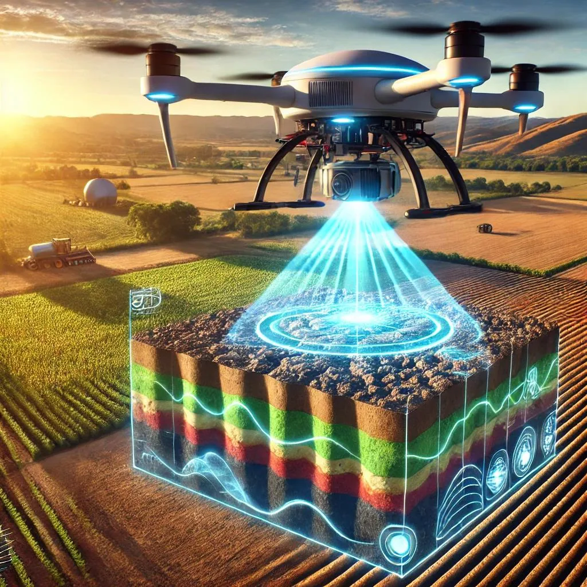
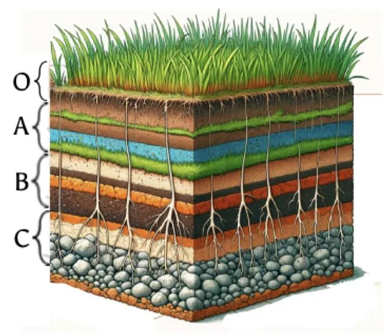

Our Approach
3D subsurface imaging
Radar systems redesigned for drone integration, enabling 3D root-zone soil moisture maps across megafarm fields.
GPR drone platform
Custom airborne GPR tested in WPI's in-situ lab and at real farmlands across the region, under controlled and live conditions.
ML signal processing
Machine learning converts raw GPR signals into classified moisture maps — augmented by synthetic data from gprMax FDTD simulations.
3D Soil Subsurface Imaging
We redesign radar systems that integrate with drones and equip them with AI for soil subsurface 3D image creation and root-zone moisture classification. Farm irrigation designers use the classification to optimally allocate irrigation equipment and water resources.

GPR-Equipped Drone Platform
We developed a Ground Penetrating Radar (GPR) and installed it on a drone to enable farm measurements. Measurements are conducted in our in-situ SoilX Lab at WPI with controlled soil conditions, and at real farmlands across the region.

Machine Learning Signal Processing
The drone-mounted radar converts received signals into 3D moisture and texture maps via machine learning. Output can be visualized as cross-sections or 3D models of the subsurface, enabling understanding of soil layers, moisture pockets, and irrigation zones.
